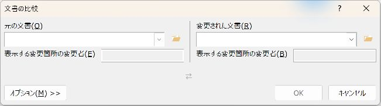
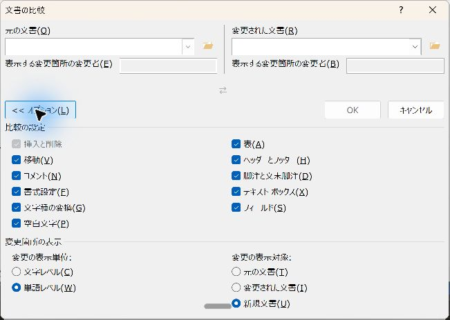

Wordの「文書の比較」で修正箇所をすぐ見つける
改訂前と改訂後のWordファイルを比べて、変更箇所を一覧で確認します。規程やマニュアルの改訂確認に使えます。
結論
「校閲」→「比較」→「比較」で変更前と変更後を選び、新規文書に結果を出します。変更を1件ずつ確認し、別名で保存します。
入門（Lv.1）
- 2文書を用意
- 比較条件を指定
- 差分を読む
- 判断して保存
目次
完成イメージ
改訂前と改訂後のWordファイルを選ぶと、違いが変更履歴として表示されます。比較結果を新しい文書へ出し、1件ずつ確認して保存します。フィールドコードは使いません。
準備：比較する2つのファイルを分かる名前で保存する
- 改訂前を「手順書_変更前.docx」、改訂後を「手順書_変更後.docx」などの名前で保存します。
- 「変更前」と「変更後」を取り違えないよう、文書の日付と内容を確認します。
- 元のファイルのコピーを残します。既に変更履歴がある文書では、その履歴をどう扱うか確認メッセージが出ることがあります。
手順1「校閲」から比較画面を開く
- Wordを開き、「校閲」→「比較」→「比較」を選びます。
- 左側の「元の文書」のフォルダーのボタンで、変更前のファイルを選びます。
- 右側の「変更された文書」で、変更後のファイルを選びます。
- 比較結果に表示する変更者の名前は、「改訂版」など内容が分かる名前を任意で指定します。

手順2比較条件と出力先を確認する
- 「オプション」を押して詳細を開きます。
- 文章の変更を中心に見たいときは、「書式設定」のチェックを外します。書式の変更も点検するならオンにします。
- 「変更の表示対象」は「新規文書」を選びます。比較結果を元の2つとは別の文書に出せます。
- ファイル名と条件を確認し、「OK」を押します。

手順3変更履歴を順番に読む
比較結果の新しい文書で「校閲」→「変更履歴」の表示を「すべての変更履歴」にします。元文書の表示は「比較」→「元の文書を表示」で切り替えます。
| 変更前 | 変更後 | 比較結果で確認すること |
|---|---|---|
| 提出期限は11月10日です。 | 提出期限は11月15日です。 | 10の削除と15の追加 |
| 申込書を提出します。 | 申込書と名簿を提出します。 | 「と名簿」の追加 |
- 「校閲」の「次へ」で変更箇所へ移動します。
- 追加・削除の両方を読み、前後の文の意味が通るか確かめます。
- 「変更履歴ウィンドウ」を表示すると、変更の一覧も確認できます。削除文字は設定によって本文中の取り消し線や吹き出しに表示されます。
手順4採用する変更を反映し、別名で保存する
- 採用する変更は「承諾」、採用しない変更は「元に戻す」（版によって「拒否」）を選びます。これは変更履歴に対する操作で、Ctrl＋Zとは別です。
- 最初は1件ずつ処理します。すべて採用する判断が済んだ場合だけ、承諾メニューの一括操作を使います。
- 「手順書_確認済み.docx」などの名前で保存します。元の変更前・変更後も残します。
見た目を変えただけでは履歴は消えません「変更履歴なし」の見た目にするだけでは、変更履歴自体は消えません。承諾・元に戻すの処理が終わったか確認します。
比較と組み込みの違い
- 比較：2つの版の違いを見たいとき。
- 組み込み：複数人が修正した変更履歴をまとめたいとき（比較メニューにあります）。
PDFをWordへ変換した文書は、変換時の改行・表の違いまで差分になることがあります。表や図が多い資料では、比較結果と実際のページをあわせて確認します。
実機で確認した内容
- 確認日：2026-11-01
- 環境：Windows版 Word
- 確認した範囲：ダイアログの実画面。
- 確認していないこと：比較結果の自動確認（自動操作では応答がなく未確認）、紙への印刷。環境により結果が異なる場合があります。
更新履歴
- 2026-11-03：本文を書き直し。